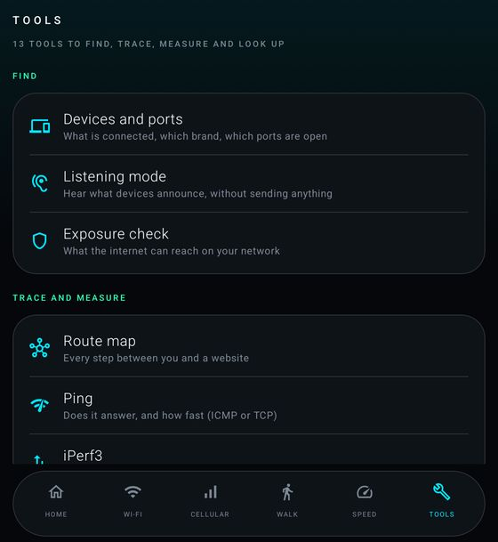

Port scanner basics
A port scanner checks which doors on a device are open. It is a normal tool for checking your own network, and the same technique can be misused against other people. This guide explains in plain words what ports are, what an open port means and why you should only scan networks you own or have clear permission to test.

What a port is
Every device on a network has an address. Programs on that device listen on numbered ports, from 0 to 65535, a bit like numbered doors on one building. A web server listens on port 80 or 443, a secure remote login on port 22, and so on.
When a program is listening on a port and accepts connections, the port is called open. If nothing is listening, it is closed. A firewall may also drop the attempt silently, which scanners usually report as filtered.
What a scan does
A TCP connect scan tries to open a connection to each port on a list. If the connection succeeds, the port is open. The scan sends packets to the device, which is why it belongs only on devices you are allowed to test. The scanner in Ultimate Network Troubleshooter offers common ports, ports 1 to 1024, or all ports in Advanced mode, and explains each open port in plain language.
In the app you choose the host to test, either a device found by the device scan or an address you type, and the scanner lists each open port with a short explanation. You do not need to memorise port numbers.
Ports you will meet
- 21: FTP file transfer, an old protocol that is often not encrypted.
- 22: SSH, a secure remote login.
- 23: Telnet, a remote login without encryption.
- 53: DNS, which turns names into addresses.
- 80 and 443: web pages, without and with encryption. Routers and printers often have a settings page here.
- 445: Windows file sharing (SMB).
- 3389: Windows Remote Desktop.

Is an open port bad?
Not by itself. A router's settings page or a printer's web page needs an open port. Ask three questions instead. Do I need this service? Is it protected by a strong password and kept up to date? Can it be reached only from my home network, or from the whole internet? Old unencrypted services and remote management ports that are reachable from the internet deserve the most attention.
A common example is a home router that offers its settings page to your local network. That is normal. The same page reachable from the whole internet with a weak password is not.
The Exposure check in the app looks at what the internet can reach on your network. It is separate from the port scanner, which runs from your phone to the hosts you choose.
When scanning is legal and when it is not
Only scan networks you own or have permission to test. Scanning other people's devices or networks without permission can have legal and other consequences, and to the person on the other end it can look like the first step of an attack. This page is not legal advice. If you are unsure, do not scan, and ask the owner first.
Safe habits
- Start with your own devices, for example your router, your computer and your printer.
- Begin with the common ports. Some fragile devices can react badly to many connection attempts in a short time.
- Write down what you find, then close or disable services you do not need.
- If you do not recognise an open port, look up what the service is before you decide what to do about it.
The app cannot capture other devices' traffic, because Android does not allow it. Its Listening mode only receives what devices announce and sends nothing.
Frequently asked questions
What is the difference between a device scan and a port scan?
A device scan finds which devices answer on your network. A port scan checks which ports on one device accept connections.
Does an open port mean I have been hacked?
No. An open port only means a program is listening, which is normal for many devices. Look closer when you do not recognise the service or when it is reachable from the internet without a reason.
Can I scan my neighbour's network to test it?
No. Only scan networks you own or have permission to test.